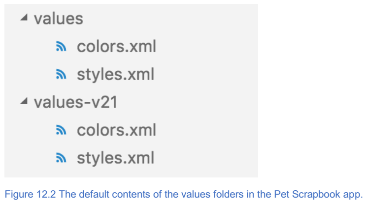
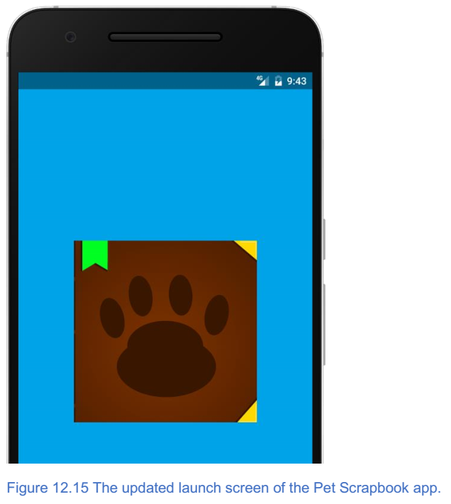

13. 部署一个Android应用程序¶
本章包括
- 如何准备要部署的应用程序；
- 如何将您的应用部署到
Google Play商店；
在最后几章中，我们继续改进宠物剪贴簿应用程序，同时教你如何支持多种屏幕分辨率，使用模态和样式应用程序与主题。现在我们已经完成了向宠物剪贴簿添加功能，下一步是什么？仅为应用程序编写应用程序不是我们的动力：我们希望分享我们的工作。分享的最佳方式是将宠物剪贴簿发布到应用商店。
在接下来的三章中，您将学习如何完成应用程序并为应用程序商店做好准备。在本章中，我们将介绍如何通过创建应用程序图标，启动屏幕以及为各种设备配置应用程序来为 Google Play 商店做好准备。在接下来的两章中，我们将介绍相同的学习要点，但重点关注 Apple 的 App Store 。让我们开始吧！
13.1. 使用 App_Resources 文件夹自定义 Android 应用程序¶
让我们回顾第3章，了解 NativeScript 应用程序的结构。您会记得 App_Resources 文件夹是一个特殊的文件夹，其中包含特定于平台的自定义项。当我们第一次向您介绍这个时，我们说我们稍后会回来。那个时候到了。
通过更新 App_Resources 文件夹中的文件来完成自定义（如应用程序图标和启动屏幕）。这个文件夹下有很多内容，所以让我们仔细看看（图12.1）。

图12.1显示了 App_Resources 文件夹下的两个子文件夹： Android 和 iOS 。这两个文件夹分别包含 Android 和 iOS 的特定于平台的文件。在本章中，我们将关注 Android 文件夹。如果您有兴趣了解 iOS 文件夹，请查看接下来的两章。
13.1.1. App_Resources/Android 内容¶
您将注意到的一系列文件夹遵循 drawable-* 的命名约定。 Android 使用可绘制文件夹来存储宠物剪贴簿中所有图像资源的不同分辨率，以便它们在支持不同分辨率和 DPI 的设备上看起来正确。如果您还记得，我们在第7章中使用这些来为 Tekmo 应用程序添加图像资源。为了帮助慢慢记忆，表12.1详细说明了每个可绘制文件夹如何映射到各种设备 DPI 。
表12.1 Android 设备近似 DPI 密度和相应的 App_Resources 文件夹
| 大小 | App_Resources 文件夹 | 近似 DPI |
|---|---|---|
| low | drawable-ldpi | ~120 DPI |
| medium | drawable-mdpi | ~160 |
| high | drawable-hdpi | ~240 |
| extra-high | drawable-xhdpi | ~320 |
| extra-extra-high | drawable-xxhdpi | ~480 |
| extra-extra-extra-high | drawable-xxxhdpi | ~640 |
接下来的两个文件夹是值文件夹。这些文件夹包含定义 Android 主题默认外观的 XML 文件（图12.2）。
有两个文件夹，因为它们适用于不同版本的 Android 。除了运行 Android 5.0 及更高版本的设备引用 values-v21 文件夹以及旧版本引用 values 文件夹之外，您无需了解详细信息。
注解
v21 文件夹扩展名是指 Android API 和 SDK 版本 21 。运行 Android v5.0 的 Android 设备使用 API 版本 21 。这可能听起来令人困惑，但作为 NativeScript 开发人员，您实际上不需要知道详细信息。
仔细观察图 12.2 ， colors.xml 和 styles.xml 文件定义了 Android 应用程序的默认颜色和样式。欢迎您打开文件并进一步检查它们：了解文件存在，但我们不会自定义它们。我们将在本章稍后回到 values 文件夹，所以不要忘记它们。
注解
如果您想了解有关 Android 应用的主题，颜色和样式的更多信息，请访问 https://developer.android.com/guide/topics/ui/themes.html 。
App_Resources/Android 文件夹中的最后一个文件是 app.gradle 和 AndroidManifest.xml 文件。 app.gradle 文件用于定义 Android 应用程序的自定义构建设置， NativeScript CLI 使用该文件创建将应用程序源代码转换为已编译的 Android 应用程序。我们不会详细介绍 app.gradle 文件，但如果您想了解更多信息，请访问 https://developer.android.com/studio/build/build-variants.html 。 AndroidManifest.xml 文件类似于 Pet Scrapbook 应用程序的配置文件，是 Android 文件夹中最重要的文件。我们将广泛使用此文件来修改宠物剪贴簿。让我们仔细看看 AndroidManifest.xml 文件。
13.2. 自定义 AndroidManifest.xml¶
部署到 Android 的每个 NativeScript 应用程序都必须具有名为 AndroidManifest.xml 的应用程序清单文件。使用 tns platform add android CLI 命令将 android 定位为平台时会生成此文件。
注解
AndroidManifest.xml 文件是一个 Android 系统文件，可向 Android 运行时提供有关您的应用程序的基本信息，例如应用程序版本，支持的屏幕配置，应用程序图标等。
我们将在 AndroidManifest.xml 文件中配置 Pet Scrapbook 应用程序的应用程序图标。该文件必须存在于 App_Resources/Android 文件夹的根目录中，如图12.3所示。

警告
不要移动或重命名 AndroidManifest.xml 文件。如果您这样做，您的应用将无法运行。 AndroidManifest.xml 文件由 Android API 正式定义，而不是由 NativeScript 定义( NativeScript 只为您提供默认值)。 有关 AndroidManifest.xml 文件的完整文档，请访问 https://developer.android.com/guide/topics/manifest/manifest-intro.html 。
AndroidManifest.xml 文件中定义的项目是宠物剪贴簿应用程序的应用程序图标。让我们看看我们如何创建一个应用程序图标并为 Pet Scrapbook 应用程序更新它。
13.2.1. App桌面图标¶
所有应用都需要应用图标，否则无法在设备上正常运行。但这不是一个应用程序图标。应用程序图标是潜在用户首次看到您的应用程序。应用程序图标应该传达意义，易于识别或记忆，以便用户可以快速找到您的应用程序。您至少可以识别图12.4中的一个应用程序图标。这些应用程序图标可以快速区分，因为它们使用的是公司徽标。
小技巧
正确获取应用图标非常重要。它需要简单，代表您的应用程序。最重要的是，它应具有艺术吸引力。如果你没有艺术细胞，那没关系。可以和朋友合伙。
当我们使用 tns create PetScrapbook CLI 命令搭建 Pet Scrapbook 时，会创建一个默认的应用程序图标（图12.5）。
您可能认为 NativeScript CLI 会创建一个应用程序图标，但事实并非如此。如果您从第7章回忆起， NativeScript 应用程序可以在各种设备上运行，每个设备都有不同的屏幕尺寸和分辨率。 为了适应各种设备， CLI 会创建多个应用程序图标。创建图标后，它们将存储在 App_Resources/Android 文件夹内的各种可绘制文件夹中，如图12.6所示。

CLI 创建的默认应用程序图标名为 icon.png ，位于 drawable-* 文件夹中。
注解
可绘制文件夹是由 Android API 定义的特定系统文件夹，用于存储位图图形文件或 XML 。 在本书中，我们将讨论位图图形。如果您想了解有关可绘制文件夹中 XML 文件的更多信息，请访问 https://developer.android.com/guide/topics/resources/drawable-resource.html 上的官方 Android 文档。
这不是我们第一次谈论 drawable-* 文件夹。回到第7章，您学习了如何使用 drawable-*``文件夹来保存特定于 ``DPI 的图像资源。
注解
应用程序图标是图像， Android 使用 drawable-* 文件夹在各种设备上显示 DPI 特定的图像。
现在您已经知道应用程序图标就像图像资源一样，让我们仔细看看 drawable-* 文件夹。
13.2.1.1. APP ICON DPIS¶
从我们之前对第7章中 drawable-* 文件夹的讨论中，您可能会记得这些文件夹遵循特定的命名约定。文件夹以 drawable-naming 约定开头，后跟 DPI 代码（对应于设备的 DPI ）。第7章要记住很多 DPI ，所以我们将表12.2列入参考。它显示了 Android 支持的不同可绘制文件夹和设备 DPI 的完整列表。
小技巧
可以在 https://developer.android.com/guide/topics/resources/providingresources.html#AlternativeResources 找到所有可用 drawable 文件夹的列表。
表12.2 可绘制文件夹名称和相应的设备 DPI 。
| 文件夹 | 设备DPI |
|---|---|
| drawable-nodpi | all devices |
| drawable-ldpi | 120 |
| drawable-mdpi | 160 |
| drawable-hdpi | 240 |
| drawable-xdpi | 320 |
| drawable-xxdpi | 480 |
| drawable-xxxdpi | 640 |
哇，那是很多DPI！创建应用程序时，您需要创建七个不同的应用程序图标 - 每个 drawable-* 文件夹一个！如果你作为一个图形艺术家的眼光，那么创建各种应用程序图标对你来说不是问题，但如果你像我们一样，你需要一些帮助。幸运的是有一些快捷方式。让我们探索这些快捷方式，并为宠物剪贴簿创建一个应用程序图标。
13.2.2. 自定义app icons¶
在我们开始之前，我们需要一个宠物剪贴簿的应用程序图标。我们不是艺术家，所以我们与艺术朋友蝙蝠侠合作。
注解
是的，他的名字是蝙蝠侠。 因为他太棒了。 特别感谢你，蝙蝠侠！
在蝙蝠侠的帮助下，我们为宠物剪贴簿开发了一个应用程序图标（图12.7）。

在我们继续之前，让我们下载应用程序图标的副本。 你可以在那里得到一份副本 https://github.com/mikebranstein/TheNativeScriptBook/blob/master/PetScrapBook.png 。
{kind=link}
13.2.2.1. APP ICON SHORTCUTS¶
要自定义宠物剪贴簿的应用程序图标，请记住我们需要创建图12.7所示图像的七个版本。我们可以打开我们最喜欢的图像编辑程序，更改图像大小，并重新保存每个已调整大小的图像，但这是一项大量的工作。相反，我们将采用快捷方式并使用 http://nsimage.brosteins.com 上的 NativeScript 图像构建器。
小技巧
为节省时间，请使用自动应用程序图标缩放器，例如 http://nsimage.brosteins.com 上的 Brostein NativeScript 图像构建器。
图12.8 显示用来生成App icon的图像构建工具。
注解
NativeScript Image Builder 工具是一个免费使用的工具，您可以选择使用该工具来帮助适当地缩放所有 NativeScript 应用程序图片。如果您选择不使用该工具，则需要适当地缩放图像，以使它们在表12.1中显示的不同设备 DPI 上看起来正确。

您可能还记得在第7章中使用我们的图像构建工具，我们上传了图像资源并调整了它们以适应各种屏幕分辨率。
注解
我们的免费工具还允许您上传您希望为 NativeScript 应用程序生成缩放资源的常规图像资源。
图像构建器工具还可帮助您调整应用程序图标的大小。让我们上传宠物剪贴簿应用程序图标。使用“选择文件”按钮，找到“宠物剪贴簿”图标，然后使用“上传应用程序图标”按钮上传它。
警告
请务必注意，应用图标应为方形，最小为 1024 x 1024 像素。我们的图片构建器会发出警告，并且不允许您上传不是方形的较小尺寸的图像，因此您无需担心上传无效文件。无论如何，提前知道很高兴。
上传宠物剪贴簿应用程序图标后，您会收到一个 zip 文件，其中包含针对不同设备 DPI 缩放的图像。
注解
我们的图像构建器为 Android 和 iOS 创建了应用程序图标。 Android 应用图标位于 Android 文件夹中。 iOS 应用程序图标位于 iOS 文件夹中。
图12.9 显示了 Android 文件夹的内容。

从 NativeScript Image Builder 返回的 zip 文件包含各种 drawable-*``文件夹中的 ``icon.png 文件。提取图标文件并通过将它们放在相应的文件夹中来更新宠物剪贴簿项目。当宠物剪贴簿安装在 Android 设备上时，将使用并显示适当大小的应用程序图标。图12.10显示了安装在 Android 设备上的宠物剪贴簿图标。
小技巧
当您更改 App_Resources 文件夹中的文件和文件夹时，您需要使用 tns build android CLI命令重新构建您的应用程序。如果您注意到您的应用程序图标没有更改，请确保运行 tns build android 。 如果您的应用程序图标在运行 tns build android 后没有改变，请尝试运行 tns platform remove android ，然后运行 android 。
现在我们已经看到 Pet Scrapbook 图标已更新，让我们花点时间了解 NativeScript 如何知道如何使用 drawable-* 文件夹中的 icon.png 文件。
13.2.3. 了解应用程序图标和 AndroidManifest.xml 文件¶
在本章的前面部分，您了解到 AndroidManifest.xml 文件用于配置 Android 应用程序，包括应用程序图标等设置。让我们更仔细地看一下文件，重点关注应用程序 XML 节点。
清单12.1 显示应用程序图标设置的 AndroidManifest.xml 应用程序节点
<application
android:name="com.tns.NativeScriptApplication"
android:allowBackup="true"
android:icon="@drawable/icon" // 可绘制文件夹中的应用程序图标的名称，告诉Android应用程序将哪个图像文件用作应用程序图标
android:label="@string/app_name"
android:theme="@style/AppTheme" >
<activity
android:name="com.tns.NativeScriptActivity"
android:label="@string/title_activity_kimera"
android:configChanges="keyboardHidden|orientation|screenSize">
<intent-filter>
<action android:name="android.intent.action.MAIN" />
<category android:name="android.intent.category.LAUNCHER" />
</intent-filter>
</activity>
<activity android:name="com.tns.ErrorReportActivity" />
</application>
清单12.1 显示了 AndroidManifest.xml 文件的应用程序节点。别担心。您不需要知道此文件的详细信息，但很高兴知道幕后发生了什么。
小技巧
即使您不需要知道 AndroidManifest.xml 文件（以及文件的应用程序元素）的详细信息，您可能也有兴趣了解更多信息。有关应用程序元素的更多信息，请查看 https://developer.android.com/guide/topics/manifest/applicationelement.html 。
代码清单12.1 指出了 android:icon ="@drawable/icon" 属性，它告诉 Android 哪个图像文件用作应用程序图标。 @drawable 是指适当匹配设备屏幕分辨率的 drawable-* 文件夹， icon 是应用程序图标图像文件的文件名（不带扩展名）。
注解
您可能想知道为什么在没有扩展名的情况下引用图标图像文件。因为图像位于各种 drawable-* 文件夹中，所以它被视为图像资源。引用图像资源时，不需要文件扩展名。如果您想要更深入的解释，请回顾第7章。
注解
如果您对 Android 如何选择最佳匹配画面的详细信息感兴趣，请参阅 https://developer.android.com/guide/topics/resources/providingresources.html#BestMatch 。
关于 NativeScript （以及使用我们的图像构建工具）的一些好处是， AndroidManifest.xml 中的应用程序图标配置和从我们的工具下载的图像已经配置了相应的应用程序图标名称。 因此，当您替换 drawable-* 文件夹中的 icon.png 文件时，您的应用程序图标将相应更新。
13.2.3.1. 另一个APP图标快捷，但不要这样做！¶
尽管为所有各种屏幕分辨率提供应用程序图标是一种很好的做法，但您只需提供一个应用程序图标。如果您的时间有限，您可能需要创建一个应用程序图标并将其放在 drawable-nodpi 文件夹中。当您在 drawable-nodpi 文件夹中放置应用程序图标并将其从其他 drawable-* 文件夹中删除时， Android 将使用 drawable-nodpi 文件夹中的应用程序图标。
警告
不要这样做。尽管它可能感觉像是一种快捷方式，但使用单个应用程序图标可能会创建次优的用户体验。花些额外的时间并使用我们的图像构建工具来获取所有应用图标。
现在我们已经更新了宠物剪贴簿应用程序图标，让我们创建一个启动屏幕。
13.3. 启动屏幕¶
所有 Android 应用都必须具有启动屏幕（有时称为启动屏幕）。
注解
启动屏幕是一个图形用户界面，通常显示图像或徽标，在应用程序加载时显示。
Android 应用程序中启动屏幕的目的是设置阶段并将应用程序介绍给用户。在 Android 的世界中，应用程序的启动屏幕可以是创意，但同时也很简单。此外，启动屏幕应遵循 Google 的 Material Design 启动屏幕指南。
注解
Google 的 Material Design 启动屏幕指南是一组规则，针对启动屏幕的 Android 特定 UI 样式提供建议。有关 Google Material Design 启动屏幕指南的更多详细信息，请访问 https://material.google.com/patterns/launch-screens.html 。
在 Android 应用中，有两种类型的启动屏幕：占位符 UI 和品牌启动屏幕。两种类型的启动屏幕是相似的，您实际上不需要知道具体的差异。但是，在高级别，占位符 UI 更简单，在应用程序加载时显示最小状态栏。品牌发布屏幕更复杂，让您有机会通过其他可视 UI 元素突出显示您应用的品牌。
小技巧
如果您在确定要使用哪个启动屏幕时遇到问题，请按照品牌启动屏幕进行操作。我们认为，占位符用户界面很糟糕，这是一个无聊的技术术语。花费额外的5分钟来配置品牌 UI 启动屏幕将获得回报。 NativeScript 应用程序也预先配置为使用品牌启动屏幕。
宠物剪贴簿应用程序将使用品牌发布屏幕，这意味着我们将通过显示宠物剪贴簿徽标突出显示宠物剪贴簿品牌。
就像应用程序图标一样，当使用 tns create CLI 命令构建应用程序时， NativeScript CLI 会为应用程序创建默认的品牌启动屏幕。启动屏幕通过 App_Resources/Android/drawable-nodpi 文件夹中的 splash_screen.xml 文件进行配置（图12.11）。

现在我们知道了存储屏幕的存储位置，让我们看一下它们并将其自定义以包含宠物剪贴簿徽标。
13.3.1. 更新启动屏幕¶
默认启动屏幕与您在 NativeScript 中创建的其他页面不同：它使用原生 Android 组件，而不是使用 NativeScript UI 元素。不幸的是，这是我们无法使用 NativeScript XML 语法创建页面的一个地方，因为在 NativeScript 虚拟机运行您的应用程序代码之前， Android 运行时正在加载启动屏幕。
注解
如果您不了解原生 Android UI 组件，请不要担心。自定义 Android 启动屏幕非常简单（您只需要替换两个图像文件）。相信我们，你没有什么可担心的。
让我们首先看一下 NativeScript CLI 提供的默认启动屏幕。清单12.2显示了 splash_screen.xml 文件，其中定义了启动屏幕。
清单12.2 splash_screen.xml 文件，它定义了 NativeScript 应用程序的启动屏幕
<layer-list xmlns:android="http://schemas.android.com/apk/res/android" android:gravity="fill">
<item>
<bitmap android:gravity="fill" android:src="@drawable/background"/> // 指向background.png，填充启动屏幕背景的图像
</item>
<item>
<bitmap android:gravity="center" android:src="@drawable/logo"/> // 指向logo.png，图像以启动屏幕为中心
</item>
</layer-list>
列表12.2中没有太多内容，因为它只有8行，即使你不知道 Android UI 标记语言，很明显屏幕由两个图像引用组成： @drawable/background 和 @drawable/logo 。
@drawable 约定与您在本章前面学到的约定相同。加载 Android 应用程序时，它会查找 drawable-* 文件夹（取决于其屏幕分辨率）并加载相应的 background.png 和 logo.png 图像文件。将扩展 background.png 图像以填充启动屏幕的背景。 logo.png 图像以背景为中心。如果您检查 App_Resources/Android 文件夹中的各种 drawable-* 文件夹，您将找到每个分辨率的 background.png 和 logo.png 文件（图12.12）。

现在您已了解如何在 NativeScript 中创建应用程序的启动屏幕，让我们看一下 Android 应用程序加载时的默认启动屏幕（图12.3）。

如果你一直在书中跟随，你可能已经看过这个发布屏幕了几十次。让我们在宠物剪贴簿中改变它的。
13.3.1.1. 更换 BACKGROUND.PNG以更新启动屏幕¶
更新启动屏幕就像更新应用程序图标：更改 drawable-* 文件夹中的图像资源。更具体地说，我们将替换 background.png 和 logo.png 文件。
因为我们必须为 Android 支持的各种屏幕分辨率创建图像，所以我们将使用 http://nsimage.brosteins.com 网站上的图像构建器。
让我们从背景图片开始。选择与宠物剪贴簿徽标互补的颜色，并创建该颜色的高分辨率（3000 x 4000像素）图像。将图像命名为 background.png 。 或者，您可以从 https://github.com/mikebranstein/TheNativeScriptBook/blob/master/background.png 下载我们已经创建的图像。
{kind=link}
小技巧
具有纯色的背景图像效果最佳，因为图像被拉伸以适合设备的屏幕分辨率和尺寸。 坚持使用纯色不仅可以确保背景看起来正确，而且还可以创建一个整洁的启动屏幕。
使用我们的 NativeScript 图像构建器的图像上传功能，选择静态图像 - Android ，单击选择文件按钮，找到 background.png 图像，然后按上传应用程序图像（图12.14）。
注解
确保使用图像构建器站点左侧的图像上传功能。左侧用于静态图像（如背景图像）。右侧是应用程序图标。
上传 background.png 文件后，您将在相应的 drawable-* 文件夹中收到带有 background.png 文件的 zip 文件（就像我们上传应用程序图标时一样）。将这些文件复制到宠物剪贴簿中各自的 drawable-* 文件夹中。
13.3.1.2. 更换LOGO.PNG以更新启动屏幕¶
接下来，对 logo.png 文件执行相同的操作：
- 从 https://github.com/mikebranstein/TheNativeScriptBook/blob/master/PetScrapBook.png 中下载宠物剪贴簿应用程序图标。
- 将文件重命名为
logo.png。 - 通过将图像上传到我们的图像构建器网站来创建图像的缩放版本。
- 将对应的
logo.png文件复制到 Pet Scrapbook 应用程序中各自的drawable-*文件夹中。
当宠物剪贴簿启动时，您将在主页面出现之前一瞬间看到更新的启动屏幕（图12.15）。
现在我们已经更新了应用程序图标和宠物剪贴簿的启动屏幕，现在是时候继续浏览 AndroidManifest.xml 文件了。我们的下一站是看看我们如何使用我们的应用程序定位不同的设备。
13.3.2. 针对各种屏幕尺寸¶
当你听到 Android 应用程序的话，你怎么看？ 手机应用程序？ 平板电脑应用？ 都是？
注解
Android 应用程序生态系统超越了手机和平板电脑应用程序：智能手表甚至是 Android TV
您可能之前没有考虑为手表或电视编写应用程序。但即使您有，也有一个配置设置告诉您的 Android 应用程序您想要支持哪些屏幕尺寸。我们希望 Pet Scrapbook 能够在尽可能多的设备上运行，这意味着它需要支持多种屏幕尺寸。让我们重新访问 AndroidManifest.xml 文件并查看 supports-screens 元素（清单12.3）。
代码清单12.3 AndroidManifest.xml 文件显示了 Pet Scrapbook 支持的默认屏幕尺寸
<supports-screens
android:smallScreens="true" // Support screens about 2 – 3 inches
android:normalScreens="true" // Support screens about 2 – 5 inches
android:largeScreens="true" // Support screens about 4 – 7 inches
android:xlargeScreens="true"/> // Support screens about 7+ inches
Android 运行时使用 AndroidManifest.xml 文件中的 supports-screens 元素来指定应用程序的屏幕大小兼容性。再一次，您会发现 NativeScript CLI 使您的工作变得轻松，因为它为您创建了默认屏幕尺寸：小（如 android:smallScreens 所述），普通（ android:normalScreens ），大（ android:largeScreens ）和额外 -large（ android:xlargeScreens ）。
注解
NativeScript CLI。你让我的工作变得轻松。对于特定的屏幕尺寸，可能很容易打开和关闭支持，但小，正常，大和超大实际意味着什么？
等一下。让我们不要忘记 CLI ，因为它确实是一个 Android 问题。不幸的是， Android 使用的屏幕尺寸属性不具有描述性。但是，不要担心：表12.2分解了 Android 屏幕尺寸以及它们与各种屏幕分辨率 DPI 的关系。
表12.2 Android 屏幕尺寸属性和相应的屏幕分辨率 DPI
| 屏幕大小 | idpi(120) | mdpi(160) | hdpi(240) | xhdpi(320) |
|---|---|---|---|---|
| Small | QVGA (240x230) | QVGA (480x640) | ||
| Normal | WQVGA (240x400) | HVGA (320x480) | WVGA (480x800),(600x1024) | (640x960) |
| Large | WVGA (480x800) | WVGA (480x800),(600x1024) | ||
| Extra-large | WSVGA (1024x600) | WXGA(1280x800), XGA(1024x768),WXGA(1280x768) | (1536x1152),(1920x1152),(1920×1200) | (2048x1536),(2560x1536),(2560×1600) |
小技巧
如果您想详细了解 support-screen 元素，可以访问 https://developer.android.com/guide/topics/manifest/supports-screenselement.html 查看官方 Android 文档。
理解表12.2仍然有点困难，事实上，我们永远不会记住这些细节。好消息是你也不需要记住它们。幸运的是， NativeScript 为我们处理宠物剪贴簿应用程序的每个页面的布局；因此，默认情况下， NativeScript 已将所有屏幕尺寸属性设置为 true ，因此我们的应用程序应在所有不同的设备和分辨率上进行适当调整！
我们可以将其中一个支持的尺寸设置为 false （如果需要）。如果我们将其设置为 false ，我们的应用程序将遵循 https://developer.android.com/guide/practices/screen-compat-mode.html 中的 Android 屏幕兼容性指南。
但是，如前所述，不需要或建议将其中任何一个设置为 false ，因为 NativeScript 会智能地处理页面元素的布局和大小调整。
13.3.3. 版本¶
在您学习 NativeScript 和构建宠物剪贴簿应用程序时，我们不断添加功能，重构的应用程序代码，并显著更改了应用程序。当我们将宠物剪贴簿应用程序发布到 Google Play 商店时，我们会继续添加新功能。我们想说的是应用程序永远不会完成：总有另一个版本。但是，您可能会想，“我如何跟踪一个应用程序版本？“
应用程序版本控制可能是一个复杂的主题，但我们已经将它简化为基础知识。 Google Play 商店在 AndroidManifest.xml 文件中有两个特定的属性。清单12.4显示了清单元素 用于控制应用程序的版本。
代码清单12.4 AndroidManifest.xml 文件显示了 manifest 元素中的版本控制属性
<manifest xmlns:android="http://schemas.android.com/apk/res/android" // manifest节点是AndroidManifest.xml文件的顶级元素
package="__PACKAGE__"
android:versionCode="1" // 用户从未看到的内部版本号
android:versionName="1.0"> // 用户在Google Play商店中看到的外部版本字符串
Android 应用程序的版本由两个数字组成:内部版本代码( android:versionCode 属性)和外部版本名称( android:versionName 属性) 。
注解
但是，内部意味着什么？由于版本代码是内部的，因此它们永远不会向用户显示，也不会在商店中反映出来。这意味着您可以在版本代码属性中放置任何整数值。因为这将是宠物剪贴簿应用程序的第一个版本，我们将此版本号保留为“1”。版本代码可以被视为内部版本号，因此最佳做法是，每次我们将宠物剪贴簿上传到 Google Play 商店时，我们都会增加该数字。
注解
将您的应用上传到 Google Play 商店时， Android 系统不会对版权代码属性强制实施限制。但是，建议您在应用的每个版本上增加它。每个版本增加版本代码可以帮助您保持井井有条。
控制应用程序版本的第二个属性是外部可见的版本名称。
注解
版本名称是在用户查看 Google Play 商店中的应用时向用户显示的字符串。
Android 不对版本名称的格式施加任何限制，但大多数开发人员使用称为语义版本控制的通用版本控制技术。
注解
语义版本控制是一种流行的，通常被接受的使用 MAJOR.MINOR.PATCH 编号方案公开版本共享代码库和包的方式。要了解有关语义版本控制的更多信息，请访问 http://semver.org 。
对于宠物剪贴簿，我们将保留默认版本名称 1.0 。我们知道它不符合语义版本控制规范，但很容易。请放心，当我们向应用商店发布第二个版本时，我们会相应地调整版本名称以尊重语义版本控制。
13.3.4. App的名称¶
我们将要介绍的最后一个 AndroidManifest.xml 文件配置选项是应用程序的名称。您可能认为应用程序的名称只是装饰性的，但这并不意味着它并不重要。想象一下，如果我们将宠物剪贴簿发布到 Google Play 商店并将其名称保留为默认名称: PetScrapbook （图12.16）。

因此，默认的应用程序名称是 PetScrapbook ，因为这是我们在使用 tns create PetScrapbook CLI命令创建应用程序时命名的应用程序。不要忘记更新您的应用程序名称。 我们来解决这个问题。应用程序名称存储在另一个名为 strings.xml 的文件中，该文件位于 App_Resources/Android/values 文件夹中。
注解
默认情况下， Native CLI 不会创建 strings.xml 文件。创建名为 strings.xml 的文件并将其放在 App_Resources/Android/values 文件夹中。
代码清单12.5 显示了 strings.xml 文件的内容。 将其添加到 strings.xml 文件中。
<resources>
<string name="app_name">Pet Scrapbook</string> // Pet Scrapbook应用程序名称的字符串资源
<string name="title_activity_kimera">Pet Scrapbook</string> // 活动应用名称的字符串资源
</resources>
strings.xml 文件中没有太多内容，实际上，您不需要知道此文件的工作方式的详细信息。我们不打算在此解释详细信息，因此请确保将 XML 复制到 strings.xml 文件中。
13.3.4.1. 将STRINGS.XML绑定到ANDROIDMANIFEST.XML中¶
需要注意的一件事是 AndroidManifest.xml 文件如何引用位于 values 文件夹中的 strings.xml 文件。让我们再次查看清单文件的 application 元素（清单12.6）。
代码清单12.6 更新的 App_Resources/AndroidManifest.xml 文件，用于引用新的 app 名称字符串
<application
android:name="com.tns.NativeScriptApplication"
android:allowBackup="true"
android:icon="@drawable/icon"
android:label="@string/app_name" // 引用string.xml的app_name元素
android:theme="@style/AppTheme">
<activity
android:name="com.tns.NativeScriptActivity"
android:label="@string/title_activity_kimera" // 引用strings.xml的title_activity_kimera元素，为应用程序的主活动指定名称
android:configChanges="keyboardHidden|orientation|screenSize">
<intent-filter>
<action android:name="android.intent.action.MAIN" />
<category android:name="android.intent.category.LAUNCHER" />
</intent-filter>
</activity>
<activity android:name="com.tns.ErrorReportActivity"/>
</application>
就像我们在本章中看到的 @drawable 命名约定一样， @string 命名约定告诉 Android 查找名为 strings.xml 的文件，并查找名为 app_name 和 title_activity_kimera 的字符串。这两个字符串值一起将我们的应用程序名称从 PetScrapbook 更改为 Pet Scrapbook 。 图12.17显示了结果。
注解
不要忘记使用 tns build android 重建 app 以查看更改。
在这一点上，我们已经处理了所有缺失的部分，并在宠物剪贴簿应用程序上进行了大量修改。 我们已准备好部署到 Google Play 商店！让我们看看我们将应用程序带入商店所需的最后步骤。
13.4. 构建你的APP¶
将 NativeScript 应用程序部署到 Google Play 商店的过程与将本机 Android 应用程序部署到商店 —— 签名并构建应用程序的发行版本然后将应用程序上传到商店的过程相同。
注解
网上有很多教程可以引导您将应用程序上传到商店并浏览应用程序提交过程，因此我们不打算介绍这一部分。如果您正在寻找有关应用提交流程的具体指导，请先访问 https://developer.android.com/distribute/google-play/start.html ，查看 Google 的官方文档。
即使我们不打算引导您完成商店提交流程，但我们认为您必须了解如何构建应用程序的发布版本然后对其进行签名。
注解
发布版本是应用程序的编译版本，已针对提交到应用程序商店进行了优化，以及在物理设备上运行。我们不会详细介绍发布版本，但您可以通过阅读 https://developer.android.com/studio/publish/preparing.html 上的官方 Android 文档了解更多信息。
在我们开始构建宠物剪贴簿的发布版本之前，我们需要介绍一些 Android 应用程序安全性的基础知识。
13.4.1. 数字签名¶
当您在 Android 模拟器上开发和测试应用程序时，模拟器会对您和您的应用程序施加相对较低的安全级别。但是，当您进入物理设备领域和 Google Play 商店时，安全性就会提升。简而言之，每个内置更多版本并部署到物理设备的应用程序必须能够绝对（并且毫无疑问）可以通过数字签名进行验证。
注解
数字签名是经过数学验证的机制，用于显示数字文档，代码或二进制文件的真实性。当数字签名应用于某些东西时，它通常被称为已经过数字签名。如果您想了解有关为 Android 注册应用程序的更多信息，可以访问 https://developer.android.com/studio/publish/app-signing.html 查看官方信息。
安装在物理设备上的所有 Android 应用都经过数字签名，这意味着该应用（和Google）的用户有理由相信该应用已获得 Google 和应用创建者的安装授权。此外，由于应用程序经过数字签名，因此用户可以放心，应用程序未在设备上被篡改。
现在您已经足够了解应用程序安全性是危险的，让我们将其提升到另一个级别。要对应用程序进行数字签名，您需要一组密钥，这些密钥存储在一个名为密钥库的特殊文件中。
13.4.2. 生成keystore文件¶
要创建密钥库，我们将使用 Android SDK 附带的名为 keytool 的命令行工具。如果您在整本书中一直关注我们，那么默认情况下您已经安装了 keytool 。
让我们从终端或命令提示符运行以下命令开始：
keytool -genkey -v -keystore petscrapbook.keystore -keyalg RSA -keysize
2048 -validity 10000 -alias petscrapbook
注解
如果您对 keytool 命令行工具的详细信息感兴趣，可以通过运行 keytool -help 或阅读更多信息来查看完整的文档。 http://docs.oracle.com/javase/6/docs/technotes/tools/windows/keytool.html 。
运行 keytool 命令时，系统会提示您填写一些信息，例如您的姓名，组织和地址，如图12.18所示。即使您不必填写所有信息，建议至少填写姓名和组织。通过提供名称和组织，它可以帮助其他人将您识别为宠物剪贴簿应用程序的有效创建者。
小技巧
运行 keytool 命令时，密钥库文件将在您运行它的文件夹中创建。建议在创建后将文件存储在安全的地方。如果您正在使用 Pet Scrapbook 项目为开源的，请确保不要包含密钥库文件。如果有人要访问您的密钥库文件，他们就可以使用它来签署他们的应用程序。
13.4.2.1. 您需要多少个 keystore 文件？¶
谷歌没有官方规则声明您不能使用相同的密钥库文件对所有应用进行数字签名。 但是，我们不建议多次使用密钥库文件。
小技巧
为每个应用程序创建一个新的密钥库文件。
我们建议您为计划发布到 Google Play 商店的每个应用创建一个新的密钥库文件。是的，它需要跟踪和保护更多文件，但如果您的一个密钥库文件被泄露，它可能会得到回报。想象一下，黑客闯入您的计算机并窃取您唯一的密钥库文件。有了这个文件，他们就可以冒充你了，更新你的任何应用程序。好消息是，有一种方法可以基本上禁用被盗的密钥库文件，但它还要求您使用密钥库对所有应用程序进行更新数字签名。如果为每个应用程序使用单独的密钥库文件，您仍然需要进行一些清理，但清理工作并不是那么广泛。
13.4.3. 创建宠物剪贴簿的发布版本¶
现在我们已经创建了密钥库文件，我们需要使用 NativeScript CLI 创建发布版本。这是通过运行带有几个命令行参数的 tns build android 命令来完成的，如下所示：
tns build android --release --key-store-path petscrapbook.keystore --key-store-password myPassword --key-store-alias petscrapbook --key-store-alias-password myPassword
使用 --release 参数运行 tns build android 命令将构建 Pet Scrapbook 发布版本。使用 --release 参数时，还必须指定密钥库参数。有几个与密钥库相关的参数，但它们都与我们刚刚创建的密钥库文件相关。
注解
为 tns build android 命令指定密钥库参数时，请确保使用创建密钥库文件时使用的相同密码。
运行 build 命令后， NativeScript CLI 将创建一个 APK 文件，该文件是提交给 Google Play 商店的文件。默认情况下，该文件将输出到 platforms/android/build/outputs /apk 文件夹。图12.19显示了 .apk 文件。

宠物剪贴簿应用程序现已完成，可以上传到 Google Play 商店！欢迎您将自己的宠物剪贴簿版本提交到 Google Play 商店。要开始使用，请访问 https://developer.android.com/distribute/googleplay/start.html 。而且，如果您确实发布了应用程序，请务必告诉我们！
13.5. 总结¶
在本章中，您学习了如下操作：
- 为 Android 创建应用程序图标。
- 为 Android 创建启动屏幕。
- 针对不同的 Android 屏幕尺寸定位应用。
- 版本并在 Android 上为您的应用命名。
- 创建可上传到 Google Play 商店的发布 APK 。